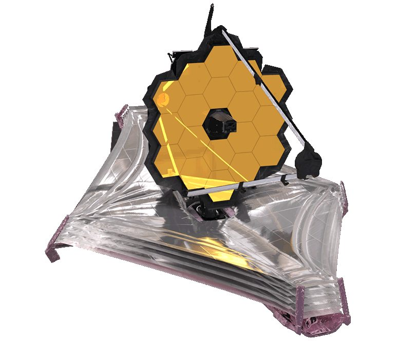

Space telescopes
Above the atmosphere, Hubble, Webb and Euclid have seen the most distant galaxies and the planets of other stars.


Earth's atmosphere is a blessing for life but a nuisance for astronomers: it makes stars twinkle and blocks almost all infrared, ultraviolet and X-ray light. That is why, since the 1990s, we have put telescopes in space.
Hubble: the telescope that changed astronomy
The Hubble Space Telescope, from NASA and ESA, was launched in 1990 aboard the shuttle Discovery. At first it was a fiasco: its 2.4-metre mirror had a polishing flaw of 2 microns, a fiftieth of the width of a hair, and images came out blurred. In 1993 astronauts installed corrective "glasses", and since then it has taken some of the most famous images in history.


Among its achievements: measuring the age of the universe, discovering that the expansion is accelerating, confirming that almost every galaxy has a central black hole, and the Ultra Deep Field, which shows 10,000 galaxies in a tiny patch of sky. It is the only space telescope repaired by astronauts, on five missions.
James Webb: seeing the cosmic dawn
The James Webb Space Telescope (NASA, ESA and the Canadian Space Agency) was launched on 25 December 2021 from French Guiana on a European Ariane 5 rocket. Its 6.5-metre mirror is made of 18 gold-coated beryllium hexagons and had to travel folded like origami. It sits 1.5 million kilometres from Earth, at a point called L2, shielded from the Sun by a sunshade the size of a tennis court.
It observes in infrared, the light given off by cold objects and the stretched light of the most distant galaxies. It has already found galaxies that existed just 300 million years after the Big Bang, analysed the atmospheres of planets around other stars and portrayed the solar system's planets as never before.
Other great eyes in space
| Telescope | Years | Speciality |
|---|---|---|
| Chandra (NASA) | 1999– | X-rays: black holes and supernova remnants |
| Spitzer (NASA) | 2003–2020 | Infrared: found the seven planets of TRAPPIST-1 |
| Kepler (NASA) | 2009–2018 | Found more than 2,600 exoplanets |
| Gaia (ESA) | 2013–2025 | 3D map of almost 2 billion stars |
| TESS (NASA) | 2018– | Searches for planets around the nearest stars |
| Euclid (ESA) | 2023– | Map of the dark universe with billions of galaxies |
| Nancy Grace Roman (NASA) | Launch planned 2026–2027 | Wide-field infrared: dark energy and exoplanets |
Videos to understand it better
- The Insane Engineering of James Webb TelescopeReal Engineering · 8.8M views
- The 1995 Hubble photo that changed astronomyVox · 7.4M views
Videos are from YouTube and belong to their creators. They only load when you click them. See all videos →